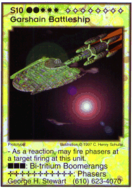

| Skeeve's Home | Table of Contents | Background | Decks & Empires | Discussion Forum |
| Cardbase | Card Lists | Promobase | Trade | Calendar |
| Skeeve's Home | Table of Contents | Background | Decks & Empires | Discussion Forum |
| Cardbase | Card Lists | Promobase | Trade | Calendar |
| A | B | C | D | E | F | G | H | I | L | M | N | O | P | Q | S | T |
A number of these ships use the following three special Heavy Weapons:
Damage Adjuster: Allows player to pick up a marker die on the target, roll it and then return it.
Deck Wrecker: Allows a player to dicard the top card on the opponent deck its fired at.
Hand Wrecker: Allows player to discard 1 card from the opponent hand its fired at.
S3 Covert Game Supply Ship
requires 1 Supply, 1 Energy; has 4 Shields
- This ship may ignore bases to shoot directly at terrain.
3 Heavy Weapons; 3 Phasers
Available from Anthony Medici (201)882-1714
S3 White Ship
requires 2 Supply, 1 Energy; has 5 Shields
- Phasers on the ship cause double damage to units against the fleet.
1 Specialized Weapon Mount; 3 Phasers
Available in Companion Games Holiday Gift Packs
S4 Tourist Ship
requires 1 Energy, 1 Ammunition; has 6 Shields
2 Phasers
Available from Mint Card Co. (410)766-8071
S5 Emergency Fire Cruiser
requires 2 Supply, 1 Energy; has 6 Shields
Damage Reducer: reduces structural damage on the target by 1/2.
2 Damage Reducers; 4 Phasers
Available from the Stamford Fire Department for a small donation (607)652-7241
Game Supply Carrier
requires 2 Supply, 1 Energy; has 4 Shields
- Shuttles on a carrier have their phasers rearmed during the Engagement Phase.
2 Specialized Weapon Mounts; 3 Phasers
Available from David Van Cleef
S5 Game Supply Ship
requires 2 Supply, 1 Energy; has 4 Shields
1 Damage Adjuster; 3 Phasers
S5 Game Supply Ship
requires 2 Supply, 1 Energy; has 4 Shields
1 Damage Adjuster; 3 Phasers
Available from Bart Abels +3170 324 9359
S5 Game Supply Ship
requires 2 Supply, 1 Energy; has 4 Shields
1 Damage Adjuster; 3 Phasers
Available from Patricia Bieksha Discount G.E. Cards, Cards Un-Ltd (800)738-6814
S5 Game Supply Ship
requires 2 Supply, 1 Energy; has 4 Shields
1 Damage Adjuster; 5 Phasers
Available from Vincent Bieksha Discount G.E. Cards, Cards Un-Ltd (800)738-6814
S5 Game Supply Ship
requires 2 Supply, 1 Energy; has 4 Shields
1 Damage Adjuster; 3 Phasers
Available from George Brown (502)361-8657
S5 Game Supply Ship
requires 2 Supply, 1 Energy; has 4 Shields
1 Deck Wrecker; 3 Phasers
Available from C.C.R. (801)753-5045
S5 Game Supply Ship
requires 2 Supply, 1 Energy; has 4 Shields
1 Damage Adjuster; 5 Phasers
Available from Chessex
S5 Game Supply Ship
requires 2 Supply, 1 Energy; has 4 Shields
2 Specialized Weapon Mounts; 3 Phasers
Available from Comics Plus (515)253-0907
S5 Game Supply Ship
requires 2 Supply, 1 Energy; has 4 Shields
1 Damage Adjuster; 3 Phasers
Available from Comicology (908)758-0508
S5 Game Supply Ship
requires 2 Supply, 1 Energy; has 4 Shields
1 Damage Adjuster; 3 Phasers
Available from Loren Crabb. (707)545-8644
S5 Game Supply Ship
requires 2 Supply, 1 Energy; has 4 Shields
1 Hand Wrecker; 3 Phasers
Available from DNA - Andrew & Paul (415)355-8614
S5 Game Supply Ship
requires 2 Supply, 1 Energy; has 4 Shields
- When destroyed does 1 point of damage to each available taget in opponent's fleet who destroyed this ship.
Available from F.P.G., Inc.
S5 Game Supply Ship
requires 2 Supply, 1 Energy; has 4 Shields
1 Deck Wrecker; 3 Phasers
Available from Neal Feldman (503)581-8335.
S5 Game Supply Ship
requires 2 Supply, 1 Energy; has 4 Shields
1 Hand Wrecker; 3 Phasers
Available from Games Import +46-46-184570
S5 Game Supply Ship
requires 2 Supply, 1 Energy; has 4 Shields
1 Hand Wrecker; 5 Phasers
Available from Gamesmasters (800) TEX-GAME
S5 Game Supply Ship
requires 2 Supply, 1 Energy; has 4 Shields
- May use foreign or exclusive technology.
2 Specialized Weapon Mounts; 3 Phasers
Available from Gopin's Grenadiers (908)308-1789 (Alan Gopin)
S5 Game Supply Ship
requires 2 Supply, 1 Energy; has 4 Shields
1 Damage Adjuster; 3 Phasers
Available from Grosnor Sportscards Inc. (416)744-3344
S5 Game Supply Ship
requires 2 Supply, 1 Energy; has 4 Shields
1 Hand Wrecker; 3 Phasers
Available from Grosnor Sportscards Inc. (416)744-3344
S5 Game Supply Ship
requires 2 Supply, 1 Energy; has 4 Shields
2 Special Weapon Mounts; 3 Phasers
Available from Rodney Johnson (713)480-851(?)
S5 Game Supply Ship
requires 2 Supply, 1 Energy; has 4 Shields
5 Phasers
Available from Multigenre, Inc.
S5 Game Supply Ship
requires 2 Supply, 1 Energy; has 4 Shields
1 Damage Adjuster; 3 Phasers
Available from "Name Here" (800)49-GAMES
S5 Game Supply Ship
requires 2 Supply, 1 Energy; has 4 Shields
1 Hand Wrecker; 3 Phasers
Available from New York Hall of Science (718)699-0005
S5 Game Supply Ship
requires 2 Supply, 1 Energy; has 4 Shields
1 Damage Adjuster; 3 Phasers
Available from The PBM Express +31-78-631453
This version of the PBM Game Supply Ship has the PBM Logo on the ship art and no contact information.
S5 Game Supply Ship
requires 2 Supply, 1 Energy; has 4 Shields
1 Damage Adjuster; 3 Phasers
Available from The PBM Express +31-78-631453
This version of the PBM Game Supply Ship has the Companion Games logo on the ship and contact information.
S5 Game Supply Ship
requires 2 Supply, 1 Energy; has 4 Shields
1 Damage Adjuster; 3 Phasers
Available from Platinum Brothers (613)226-8866
S5 Game Supply Ship
requires 2 Supply, 1 Energy; has 4 Shields
1 Deck Wrecker; 3 Phasers
Available from Starbase One (412)521-3633
S5 Game Supply Ship
requires 2 Supply, 1 Energy; has 4 Shields
1 Damage Adjuster; 9 Phasers
Available from War Dogs (904)399-1975
IGMC Replenishment Ship
requires 1 Economy, 1 Supply, 1 Energy, 1 Ammunition; has 3 Shields; provides +1 Supply, +1 Energy, +1 Ammunition
- Provides 1 supply, 1 energy and 1 ammunition to each non-replenishment ship in the fleet.
2 Phasers
Available from IGMC c/o Albert Sidaras (914)386-1534
S5 Mathematical Ship
has 5 Shields; provides 2 Research
- This ship's weapons may damage monsters (even those not normally damaged) if 1 research point is applied to the monster for each
point of damage to be caused.
1 Non-Euclidiean Geometry [Heavy Weapon]; 3 Deadly Algebras [Phasers]
Available from David S. Auer (908)671-8327
S5 Intergalactic T-shirt Trader
requires 2 Supply, 1 Energy; has 4 Shields
- Phasers on this ship cause double damage if the ship's controller is wearing a Galactic Empires T-shirt.
5 Phasers
Available from Bold City Graphics (904)725-8475
S6 Game Supply Flagship
requires 2 Supply, 1 Energy; has 4 Shields
2 Hand Wreckers; 6 Phasers
Available from Companion Games Inc. (607)652-9038
S6 Game Supply Smuggler
requires 1 Economy, 1 Supply, 1 Energy; has 5 Shields
- Can use foreign or exclusive technology.
2 Specialized Weapon Mounts; 4 Phasers
Available from Cards Un-LTD (908)272-9572
S8 Ship from the Future
requires 2 Research; has 4 Shields
- May use foreign or exclusive technology or crew.
8 Phasers
S10 Game Supply Ship
requires 2 Supply; 3 Energy; has 10 Shields
1 Hand Wrecker; 6 Phasers
Available from Alternative Cards Distribution (608)836-6910
S1 Art Patrol
has 2 Shields {Aesthetic}
- When discarded is returned to owner's hand.
- All Collector class targets must be eliminated before this unit can fire at other targets.
1 Aesthetic Weapon; 1 Phaser
Available from Mint Card Co. (410)766-8071
S2 Aesthetic Escort
requires 1 Ammunition; has 4 Shields {Aesthetic}
- As a reaction, intercept damage appied to a ship of 7+ strength, taking 2 points for each point intercepted.
- All Collector class targets must be eliminated before this unit can fire at other targets.
1 Aesthetic Weapon; 2 Phasers
Available from Mint Card Co. (410)766-8071
S3 Sculptor
requires 1 Energy, 1 Ammunition; has 3 Shields {Aesthetic}
- All Collector class targets must be eliminated before this unit can fire at other targets.
1 Aesthetic Weapon; 3 Phasers
Available from Mint Card Co. (410)766-8071
S4 Aesthetic Express
requires 1 Energy, 1 Ammunition; has 4 Shields; modifier +3 Economy {Aesthetic}
- When in play on terrain, adds 3 economy (6 if on nebula).
- All Collector class targets must be eliminated before this unit can fire at other targets.
2 Phasers
Available from Mint Card Co. (410)766-8071
S5 Beautifier
requires 1 Energy, 2 Ammunition; has 5 Shields {Aesthetic}
- All Collector class targets must be eliminated before this unit can fire at other targets.
2 Aesthetic Weapons; 4 Phasers
Available from Mint Card Co. (410)766-8071
S/G6 Aesthetic Cruiser
has 6 Shields; provides 1 Command point {Aesthetic}
- Played as an agenda, is considered a ship after the agenda is accomplished.
Exposed: When 5 Aesthetic class cards are in play, becomes a ship.
- All Collector class targets must be eliminated before it can fire at other targets.
2 Aesthetic Weapons; 5 Phasers
Available from Mint Card Co. (410)766-8071
S7 Aesthetic Carrier
requires 2 Energy, 2 Ammunition; has 6 Shields {Aesthetic}
- Shuttles on a carrier have their phasers rearmed during the Engagement phase.
- All Collector class targets must be eliminated before this unit can fire at other targets.
2 Aesthetic Weapons; 4 Phasers
Available from Mint Card Co. (410)766-8071
S7 Art Critic
requires 3 Energy, 1 Ammunition; has 6 Shields {Aesthetic}
- All Collector class targets must be eliminated before this unit can fire at other targets.
3 Aesthetic Weapons; 5 Phasers
Available from Mint Card Co. (410)766-8071
S9 Deleter
requires 3 Energy, 2 Ammunition; has 8 Shields {Aesthetic}
- All Collector class targets must be eliminated before this unit can fire at other targets.
4 Aesthetic Weapon; 5 Phasers
Available from Mint Card Co. (410)766-8071
S6 Bolaar Pirate Raider Leader
requires 1 Economy, 1 Supply, 1 Energy; has 5 Shields
- Equipment played to this ship is played fully engaged.
2 Specialized Weapon Mounts; 4 Phasers
Available from Anthony Medici (201)882-1714
S7 Collector's Flagship
requires 2 Economy, 2 Research; has 7 Shields {Persona; Collector}
- The heavy weapons on this ship may mimic the function of any heavy weapon in play.
- The heavy weapons damage cannot be negatively modified by the opponent whose weapons are being mimicked.
2 Heavy Weapons; 6 Phasers
Available from Cards4U, Inc. (703)790-8048
S2 Council of Six Tribe Patrol Ship
has 5 Shields
- When discarded is returned to the hand.
- Occurence cards do not affect the ship stack.
2 Phasers
Available from the Council of Six
S3 Council of Six Tribe Escort
requires 2 Supply, 1 Energy; has 4 Shields
- As a reaction, intercept damage being applied to a ship of 7 or greater strength, taking 2 damage for each intercepted.
- Occurence cards do not affect the ship stack.
1 Bi-tritium Boomerang; 1 Phaser
Available from the Council of Six
S4 Council of Six Tribe Scout Ship
requires 2 Supply, 1 Energy; has 5 Shields; provides 4 Research
- May look at 1 player's hand each turn, exposing 1 of the cards.
- Occurence cards do not affect the ship stack.
1 Bi-tritium Boomerang; 2 Phasers
Available from the Council of Six
S5 Council of Six Tribe Command Destroyer
requires 2 Supply, 1 Energy; has 7 Shields; provides 1 Command point
- Occurence cards do not affect the ship stack.
4 Phasers
Available from the Council of Six
S6 Council of Six Tribe Medium Cruiser
requires 2 Supply, 1 Energy; has 6 Shields
- Occurence cards do not affect the ship stack.
2 Bi-tritium Boomerangs; 5 Phasers
Available from the Council of Six
S7 Council of Six Tribe Command Cruiser
requires 3 Supply, 1 Energy; has 8 Shields; provides 1 Command point
- Occurence cards do not affect the ship stack.
1 Bi-tritium Boomerang; 6 Phasers
Available from the Council of Six
S7 Council of Six Tribe Diplomatic Cruiser
requires 3 Supply, 1 Energy; has 7 Shields {Persona; Prototype}
- Occurence cards do not affect the ship stack.
- As a reaction, may fire phasers at a target firing at this unit.
2 Bi-tritium Boomerangs; 6 Phasers
Available from John Perreault
S7 Council of Six Tribe Heavy War Cruiser
requires 3 Supply, 1 Energy; has 7 Shields {Persona}
- May not be the basis of a stack.
(2 Energy): Phaser Overload (This unit's unmodified phasers cause double damage, this ship system is not cumulative.)
2 Specialized Weapon Mounts; 5 Phasers
Available from Dan St. Jean
S7 Council of Six Tribe Super Heavy Cruiser
requires 3 Supply, 1 Energy; has 5 Shields
- Occurence cards do not affect the ship stack.
- May move against terrain.
- This ship's heavy weapons cause double damage to location.
5 Bi-tritium Boomerangs; 3 Phasers
Available from Brian DeRienze
S8 Council of Six Tribe Battlecruiser
requires 3 Supply, 2 Energy; has 8 Shields
- Occurence cards do not affect the ship stack.
3 Bi-tritium Boomerangs; 7 Phasers
Available from the Council of Six
S9 Council of Six Tribe Dreadnaught
requires 3 Supply, 2 Energy; has 9 Shields
- Occurence cards do not affect the ship stack.
2 Bi-tritium Boomerangs; 8 Phasers
Available from the Council of Six
S10 Council of Six Tribe Battleship
requires 4 Supply, 2 Energy; has 10 Shields {Prototype}
- Occurence cards do not affect the ship stack.
- As a reaction, may fire phasers at a target firing at this unit.
3 Bi-tritium Boomerangs; 10 Phasers
Available from the Council of Six

S2 Garshain Tribe Patrol Ship
has 2 Shields
- When discarded is returned to the hand.
3 Phasers
Available from George H. Stewart (610)623-4070
S3 Garshain Tribe Escort
requires 2 Energy; has 4 Shields
- As a reaction, an escort can intercept damage applied to any ship of 7 or greater strength, taking 2 points for each point
intercepted.
1 Bi-tritium Boomerang; 3 Phasers
Available from George H. Stewart (610)623-4070
S4 Garshain Tribe Frigate
requires 2 Energy; has 4 Shields
- When played disengaged, move a card from the deck under this card.
- When engaged, expose the card and place it on this ship if eligible, otherwise add it to the hand.
1 Bi-tritium Boomerang; 4 Phasers
Available from George H. Stewart (610)623-4070
S5 Garshain Tribe Command Destroyer
requires 2 Energy; has 5 Shields; provides 1 Command point
- When played disengaged, move a card from the deck under this card.
- When engaged, expose the card and place it on this ship if eligible, otherwise add it to the hand.
1 Bi-tritium Boomerang; 4 Phasers
Available from George H. Stewart (610)623-4070
S6 Garshain Tribe Medium Carrier
requires 2 Energy; has 4 Shields
- Shuttles on a carrier have their phasers rearmed during the Engagement Phase.
3 Bi-tritium Boomerangs; 5 Phasers
Available from George H. Stewart (610)623-4070
S7 Garshain Tribe Command Cruiser
requires 1 Supply, 2 Energy; has 6 Shields; provides 1 Command point
- When played disengaged, move a card from the deck under this card.
- When engaged, expose the card and place it on this ship if eligible, otherwise add it to the hand.
2 Bi-tritium Boomerangs; 6 Phasers
Available from George H. Stewart (610)623-4070
S7 Garshain Tribe Heavy Carrier
requires 1 Supply, 2 Energy; has 5 Shields
- Shuttles on a carrier have their phasers rearmed during the Engagement Phase.
3 Bi-tritium Boomerang; 6 Phasers
Available from George H. Stewart (610)623-4070
S8 Garshain Tribe Battlecarrier
requires 1 Supply, 3 Energy; has 6 Shields {Prototype}
- As a reaction, may fire phasers at a target firing at this unit.
- Shuttles on a carrier have their phasers rearmed during the Engagement Phase.
3 Bi-tritium Boomerang; 7 Phasers
Available from George H. Stewart (610)623-4070
S9 Garshain Tribe Dreadnaught Carrier
requires 1 Supply, 3 Energy; has 7 Shields {Prototype}
- As a reaction, may fire phasers at a target firing at this unit.
- Shuttles on a carrier have their phasers rearmed during the Engagement Phase.
2 Bi-tritium Boomerang; 8 Phasers
Available from George H. Stewart (610)623-4070
S10 Garshain Tribe Battleship
requires 2 Supply, 3 Energy; has 8 Shields {Prototype}
- As a reaction, may fire phasers at a target firing at this unit.
3 Bi-tritium Boomerang; 11 Phasers
Available from George H. Stewart (610)623-4070
S7 Grand Chieftain's Tribe Command Cruiser
requires 2 Supply, 2 Energy; has 8 Shields; provides 2 Command points {Persona}
- This ship is not required to destroy other Indirigan ships.
- For each command point generated by the ship stack, the ship takes 1 less damage each opponent volley.
4 Bi-Tritium Boomerangs; 5 Phasers
Available by winning an Indirigan Touring Game tourment
S2 Gray Death Tribe Patrol Ship
has 2 Shields {Aesthetic}
- When discarded is returned to the hand.
Available from Mint Card Co. (410)766-8071
S3 Gray Death Tribe Escort
requires 1 Supply, 1 Energy; has 5 Shields {Aesthetic}
- As a reaction, this ship can intercept damage applied to any ship of 6 or greater strength, taking 2 pointsfor each point
intercepted.
3 Phasers
Available from Mint Card Co. (410)766-8071
R/S4 Gray Death Tribe Space Boarding Ship
requires 1 Supply, 1 Energy; has 4 Shields {Aesthetic}
1 Energy: Heavy Oscillating Transporter (Transport up to 3 crew to/from this ship or 1 crew on a there-and-back mission.)
- May only be played in reaction, fully engaged, with a Marine to transport the marine.
3 Phasers
Available from Mint Card Co. (410)766-8071
S5 Gray Death Tribe Command Destroyer
requires 2 Supply, 1 Energy; has 5 Shields; provides 1 Command point {Aesthetic}
1 Energy: Transporter (May transport 1 crew to or from this ship or there-and-back, but not through opponent shields.)
- Weapon damage applied to the structure is reduced by 1/2.
1 Aesthetic Bi-tritium Boomerang; 3 Phasers
Available from Mint Card Co. (410)766-8071
S6 Gray Death Tribe Carrier
requires 2 Supply, 1 Energy; has 4 Shields {Aesthetic}
1 Energy: Transporter (May transport 1 crew to or from this ship or there-and-back, but not through opponent shields.)
- Shuttles on a carrier have their phasers rearmed during the Engagement Phase.
6 Phasers
Available from Mint Card Co. (410)766-8071
S7 Gray Death Tribe Battle Barge - War Cruiser
requires 3 Supply, 1 Energy; has 5 Shields {Aesthetic}
2 Energy: Emergency Transporters (Each transporter may transport 1 crew to or from this ship or there-and-back, but not through
opponent shields. Each may be used inr eaction mode.)
- Weapon damage applied to the structure is reduced by 1/2.
3 Aesthetic Bi-tritium Boomerangs; 4 Phasers
Available from Mint Card Co. (410)766-8071
S7 Gray Death Tribe Command Cruiser
requires 3 Supply, 1 Energy; has 6 Shields; provides 1 Command point {Aesthetic}
1 Energy: Transporter (May transport 1 crew to or from this ship or there-and-back, but not through opponent shields.)
- Weapon damage applied to the structure is reduced by 1/2.
2 Aesthetic Bi-tritium Boomerangs; 4 Phasers
Available from Mint Card Co. (410)766-8071
S8 Gray Death Tribe Battlecruiser
requires 3 Supply, 2 Energy; has 8 Shields {Aesthetic}
1 Energy: Transporter (May transport 1 crew to or from this ship or there-and-back, but not through opponent shields.)
5 Aesthetic Bi-tritium Boomerangs; 4 Phasers
Available from Mint Card Co. (410)766-8071
S9 Gray Death Tribe Dreadnaught
requires 3 Supply, 2 Energy; has 8 Shields {Aesthetic}
1 Energy: Transporter (May transport 1 crew to or from this ship or there-and-back, but not through opponent shields.)
5 Aesthetic Bi-tritium Boomerangs; 5 Phasers
Available from Mint Card Co. (410)766-8071
S10 Gray Death Tribe Battleship
requires 4 Supply, 2 Energy; has 8 Shields {Aesthetic}
2 Energy: Emergency Transporters (May transport 1 crew to or from this ship or thebb-and-back, but not through opponent
shields. May be used in reaction mode.)
6 Aesthetic Bi-tritium Boomerangs; 8 Phasers
Available from Mint Card Co. (410)766-8071
S7 Insipid Tribe Dreadnought (Damaged Dreadnought)
requires 3 Supply, 2 energy; has 9 Shields {Persona; Attrition}
- When played, roll a die and place it on the ship as shield damage. Roll another die as structural damage.
- Only half of the current weapons on this ship may be fired each turn (any combination).
5 Bi-Tritium Boomerangs; 9 Phasers
Available by winning an Indirigan Touring Game tournament
S10 Intrepid Wanderer
requires 4 Supply, 2 Energy; has 8 Shields {Conjectural; Persona; Aesthetic}
- As a reaction, may fire phasers at a target firing at this unit.
- Shuttles on a carrier have their phasers rearmed during the Engagement Phase.
4 Aesthetic Bi-tritium Boomerangs; 10 Phasers
Available from Mint Card Co. (410)766-8071
 S2 Infected Tribe Paramedic Patrol ERV
S2 Infected Tribe Paramedic Patrol ERV
has 4 Shields {Infected}
- When discarded is returned to the hand.
2 Phasers
Available from Andre McInnis (416)483-5385
Update : Available from Gerry Smit
S3 Infected Tribe Emergency Response Escort
requires 2 Supply, 1 Energy; has 6 Shields {Infected}
- As a reaction, an escort can intercept damage applied to any ship of 7 or greater strength, taking 2 points for each point
intercepted.
3 Phasers
Available from Andre McInnis (416)483-5385
Update : Available from Gerry Smit
S4 Infected Tribe Emergency Relief Tug
requires 2 Supply, 1 Energy; has 6 Shields; provides 1 Research; modifier x2 Economy {Infected}
- Doubles the economic output of the terrain on which it is located.
4 Phasers
Available from Andre McInnis (416)483-5385
Update : Available from Gerry Smit
S5 Infected Tribe Light Triage Cruiser - Command ERV
requires 2 Supply, 1 Energy; has 7 Shields; provides 1 Research, 1 Command point {Infected}
1 Bi-tritium Boomerang; 3 Phasers
Available from Andre McInnis (416)483-5385
Update : Available from Gerry Smit
S6 Infected Tribe Light Evac Carrier
requires 2 Supply, 1 Energy; has 6 Shields; provides 3 Research {Infected}
- Shuttles on a carrier have their phasers rearmed during the Engagement Phase.
2 Bi-tritium Boomerangs; 4 Phasers
Available from Andre McInnis (416)483-5385
Update : Available from Gerry Smit
S7 Infected Tribe Heavy Triage Cruiser - Command ERV
requires 2 Supply, 1 Energy; has 8 Shields; provides 1 Research, 1 Command point {Infected}
1 Energy: Electronic Warfare System
2 Bi-tritium Boomerangs; 5 Phasers
Available from Andre McInnis (416)483-5385
Update : Available from Gerry Smit
S8 Infected Tribe Heavy Evac Carrier
requires 2 Supply, 2 Energy; has 8 Shields; provides 4 Research {Infected}
- Shuttles on a carrier have their phasers rearmed during the Engagement Phase.
1 Energy: Electronic Warfare System
3 Bi-tritium Boomerangs; 5 Phasers
Available from Andre McInnis (416)483-5385
Update : Available from Gerry Smit
S9 Infected Tribe Super Heavy Trauma Cruiser ERV
requires 3 Supply, 2 Energy; has 9 Shields; provides 2 Research {Infected}
1 Energy: Electronic Warfare System
4 Bi-tritium Boomerangs; 5 Phasers
Available from Andre McInnis (416)483-5385
Update : Available from Gerry Smit
S9 The Lone Wolf (Wolf's Personal Dreadnought)
requires 2 Supply, 2 Energy; has 10 Shields; provides 1 Command point {Persona}
Phasers:6 Bi-Tritium Boomerangs:4
- Indirigan ships in the fleet are not required to destroy Lone Wolf ships.
- Lone Wolf ships are not required to destroy other Indirigan Tribe ships in the fleet.
Available by winning an Indirigan Touring Game tournament
S10 Dread Savior
requires 4 Supply, 2 Energy; has 10 Shields; provides 2 Research {Infected; Persona; Prototype}
- As a reaction, may fire phasers at a target firing at this unit.
4 Bi-tritium Boomerangs; 10 Phasers
Available from Andre McInnis (416)483-5385
Update : Available from Gerry Smit
S2 Meerkats Tribe Patrol Ship
has 3 Shields
- Playing this patrol ship does not require a card play.
- When discarded is returned to the hand.
1 Phaser
Available from Pastimes (717)838-9502 at 1 East Main Street, Palmyra PA 17078
S5 Meerkats Tribe Command Destroyer
requires 2 Supply, 1 Energy; has 6 Shields; provides 1 Command point
- Indirigan crew on this ship are 2 points stronger.
1 Bi-tritium Boomerang; 2 Phasers
Available from Pastimes (717)838-9502 at 1 East Main Street, Palmyra PA 17078
S5 Meerkats Tribe Heavy Escort
requires 2 Supply, 1 Energy; has 6 Shields
- As a reaction, an escort can intercept damage applied to any ship of 7 or greater strength, taking points for each point
intercepted.
2 Bi-tritium Boomerangs; 2 Phasers
Available from Pastimes (717)838-9502 at 1 East Main Street, Palmyra PA 17078
S9 Meerkats Tribe Dreadnaught
requires 3 Supply, 2 Energy; has 8 Shields
- Indirigan crew on this ship are 4 points stronger.
4 Bi-tritium Boomerangs; 4 Phasers
Available from Pastimes (717)838-9502 at 1 East Main Street, Palmyra PA 17078
S3 Nagaridni Pirate Destroyer
requires 1 Economy; has 4 Shields
1 Specialized Weapon Mount; 1 Bi-tritium Boomerang; 2 Phasers
Available from Anthony Medici (201)882-1714
S4 Nagaridni Pirate Salvage Tug
requires 1 Economy, 1 Supply, 1 Energy; has 5 Shields
- Each turn, during the Draw Cards Phase, move an equipment card in the Discard Pile to the hand for a cost in repair equal to the
strength of the card.
1 Specialized Weapon Mount; 1 Bi-tritium Boomerang; 3 Phasers
Available from Anthony Medici (201)882-1714
S6 Nagaridni Pirate Boarding Cruiser
requires 1 Economy, 2 Supply, 1 Energy; has 7 Shields
- Each turn, the first crew played to this ship does not require a card play.
- May transport up to 2 crew to/from location or on a there-and-back mission.
2 Specialized Weapon Mounts; 2 Bi-tritium Boomerangs; 2 Phasers
Available from Anthony Medici (201)882-1714
S7 Nagiridni Pirate Cruiser - Aggressor Cruiser
requires 2 Economy, 1 Supply, 1 Energy; has 6 Shields
- May move against terrain (during the Allocation Phase), stealing its engagement cost from the
terrain (may also steal ammunition).
3 Specialized Weapon Mounts; 3 Bi-tritium Boomerangs; 4 Phasers
Available from Anthony Medici (201)882-1714
S7 Nagaridni Pirate Mine Cruiser
requires 2 Economy, 1 Supply, 1 Energy; has 7 Shields
1 Supply: Mine Deployment Susyem
2 Specialized Weapon Mounts; 2 Bi-tritium Boomerangs; 4 Phasers
Available from Anthony Medici (201)882-1714
S2 Propagationist Tribe Patrol Ship
has 2 Shields
- When discarded is returned to the hand.
3 Phasers
Available from David Van Cleef
S2 Vinciennes Pirate Tribe Patrol Ship
has 4 Shields
- May use foreign technology.
- When discarded is returned to the hand.
2 Phasers
Available from Cards Un-LTD (908)272-9572
S5 Vinciennes Pirate Tribe Command Escort
requires 1 Economy, 1 Energy; has 7 Shields; provides 1 Command point
- May use foreign technology.
- As a reaction, intercept damage being applied to any ship of 7 or greater strength taking 2 points for each point intercepted.
1 Supply: Mine Deployment System
1 Energy: Electronic Warfare System
1 Specialized Weapon Mount; 3 Phasers
Available from Cards Un-LTD (908)272-9572
S6 Vinciennes Pirate Tribe Heavy Escort
requires 1 Economy, 1 Energy; has 6 Shields
- May use foreign technology.
- As a reaction, intercept damage being applied to any ship of 7 or greater strength taking 2 points for each point intercepted.
1 Supply: Mine Deployment System
1 Energy: Electronic Warfare System
2 Specialized Weapon Mounts; 4 Phasers
Available from Cards Un-LTD (908)272-9572
S7 Vinciennes Pirate Tribe Command Cruiser
requires 1 Economy, 1 Supply, 1 Energy; has 8 Shields; provides 1 Command point
- May move against terrain, stealing its engagement cost and ammunition.
1 Supply: Mine Deployment System
1 Energy: Electronic Warfare System
2 Specialized Weapon Mounts; 5 Phasers
Available from Cards Un-LTD (908)272-9572
S8 Vinciennes Pirate Tribe Battlecruiser
requires 1 Economy, 1 Supply, 2 Energy; has 8 Shields
- May move against terrain, stealing its engagement cost and ammunition.
1 Supply: Mine Deployment System
1 Energy: Electronic Warfare System
4 Specialized Weapon Mounts; 5 Phasers
Available from Cards Un-LTD (908)272-9572
S9 Vinciennes Pirate Tribe Dreadnaught
requires 1 Economy, 1 Supply, 2 Energy; has 9 Shields
- May move against terrain, stealing its engagement cost and ammunition.
1 Supply: Mine Deployment System
1 Energy: Electronic Warfare System
3 Specialized Weapon Mounts; 6 Phasers
Available from Cards Un-LTD (908)272-9572
S10 Vinciennes Pirate Tribe Battleship
requires 2 Economy, 1 Supply, 2 Energy; has 10 Shields; provides 1 Command point
- May move against terrain, stealing its engagement cost and ammunition.
2 Supply: Mine Deployment System
2 Energy: Electronic Warfare System
4 Specialized Weapon Mounts; 9 Phasers
Available from Cards Un-LTD (908)272-9572
S6/4 Tranoan Command Cruiser
requires 2 Economy, 2 Research; has 4 Shields; provides 1 Command point
- When destroyed in the fleet is moved to the time origin.
- Must destroy locations with opponent time knights before tagetting other locations.
2 Time Phasers; 5 Time Damage Generators
Available from Anthony Medici (201)882-1714
S7 Violator's Pirate - Command Ship
requires 2 Economy, 1 Supply, 1 Energy; has 7 Shields; provides 1 Command point
- May move against terrain (during the Allocation Phase), stealing its engagement cost from that terrain.
2 Specialized Weapon Mounts; 5 Phasers
Available from Cards Un-LTD (908)272-9572
S8 Violator's Pirate - Dreadnaught
requires 3 Economy, 1 Supply, 1 Energy; has 7 Shields; provides 1 Command point
- May move against terrain (during the Allocation Phase), stealing its engagement cost from that terrain.
3 Specialized Weapon Mounts; 5 Phasers
Available from Cards Un-LTD (908)272-9572
S9 Violator's Pirate - Battleship
requires 4 Economy, 1 Supply, 1 Energy; has 7 Shields; provides 2 Command point
3 Specialized Weapon Mounts; 6 Phasers
Available from Cards Un-LTD (908)272-9572